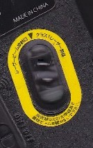

（371）のぞいちゃダメ～！！
有線方式のマウスを使っていたが、どうもアタマを取られるので操作性が悪い。そこでレーザービーム式のマウスに買い換えた。新しいマウスには底面の一角に黄色の楕円が描かれていて、真ん中がガラス窓になっている。どうやら このガラス窓からレーザービームが出るらしい。
帰宅してさっそく取り替え。取りつけ終わってから改めて底を見ると、ガラス窓が赤く光っている。（おぉ これがレーザービームなのか）。そのとき 黄色の楕円に文字が印刷してあることに気づいた。しかし字が細かいので判読しにくい。目の前までマウスを持ちあげ ジッと目をこらしてみた。すると少し字が大きめの上側には「レーザービーム放射口」とあった。（うん、なるほど）と一人で納得。

しかし いくら目をこらしても、下側の文字は小さすぎて判読できない。読めないとなると、どうしても読みたい(^-^； そこで虫眼鏡を持ち出してきて眺めてみた。そしたら、「虫眼鏡で のぞいちゃダメ！」と書いてあった....(゜0゜)